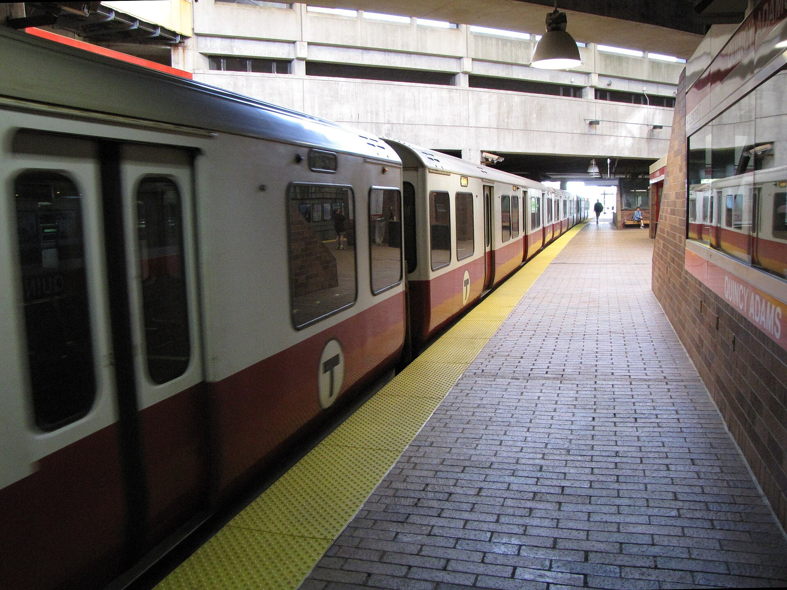
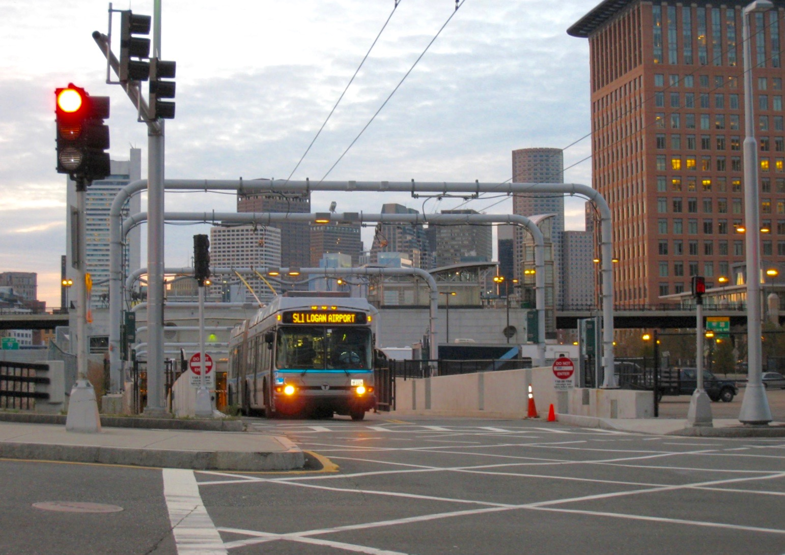
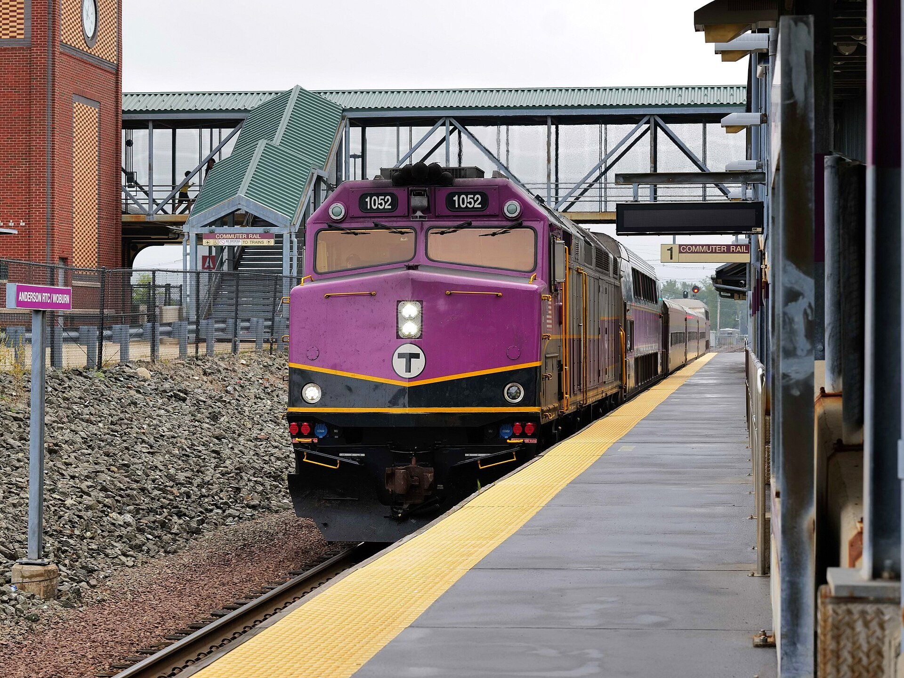
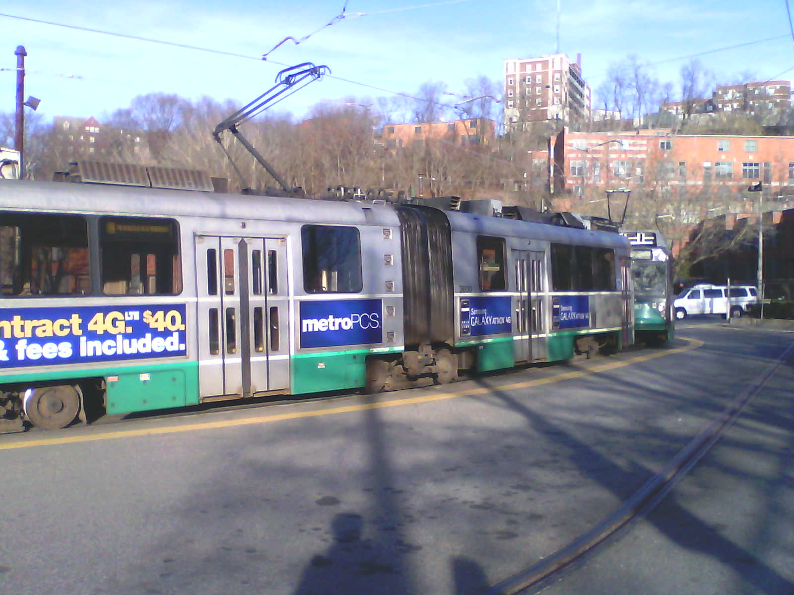

How late is the T?
0%
of Boston's buses and trains are on time right now
Loading the latest snapshot…
Running latest right now
Minutes behind timetable at each vehicle's next stop
On time by mode, right now
Four ways to be late




Through the day
How late, and does the weather matter?
Routes running latest
Routes with at least 30 observations, by median delay.
| Route | Mode | Median delay | 90th pct | On time | Seen |
|---|
How this is measured
Every 30 minutes a pipeline (Dagster, dbt, DuckDB) snapshots the MBTA's GTFS-realtime feed and records each vehicle's predicted arrival at its next stop.
Delay is that prediction minus the timetable, counted only when the stop is less than 10 minutes away, so it is close to the real delay rather than a forecast.
On time means 1 minute early to 5 minutes late. Subway trips added on the fly have no timetable, so they are left out.
Weather is Open-Meteo's hourly reading for downtown Boston, joined on the hour. Bad batches are quarantined before they reach this page.